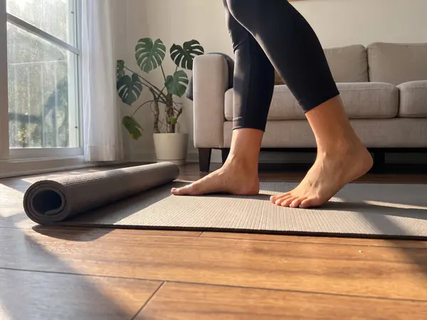
1
Arranque
Aprendés los movimientos y armás la base. 30 segundos de trabajo, 30 de pausa.
Reto de 28 días · desde tu casa
La app te dice qué hacer cada día. Entrenás de 20 a 30 minutos, comés normal y tenés un Plan B de 8 minutos cuando el día no da.
Asesoramiento personalizado por WhatsApp durante 7 semanas.
Comunidad, app y materiales con acceso de por vida.
No te falta fuerza de voluntad.Te faltaba un plan que entre en tu vida.
Una hora de gimnasio, dietas de hambre, todo o nada: planes pensados para una vida que no tenés. Este reto va al revés: primero que puedas cumplirlo, después que exija más.
Ver qué incluye y el precioSe abre desde el celular sin descargar nada. Te indica el entreno del día, tiene un timer guiado, 32 recetas y un Plan B de 8 minutos para los días difíciles. Podés ver tu racha, calendario y mediciones de progreso. El video no tiene audio.
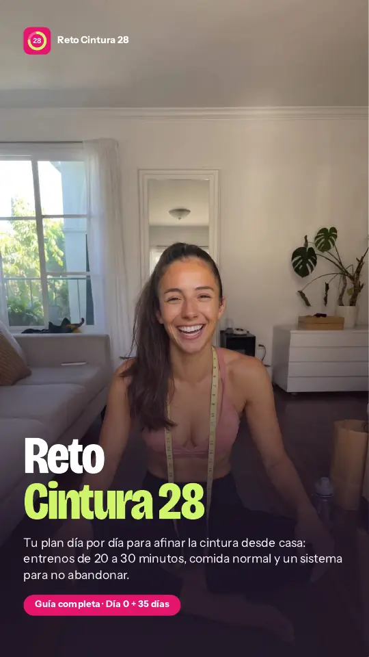
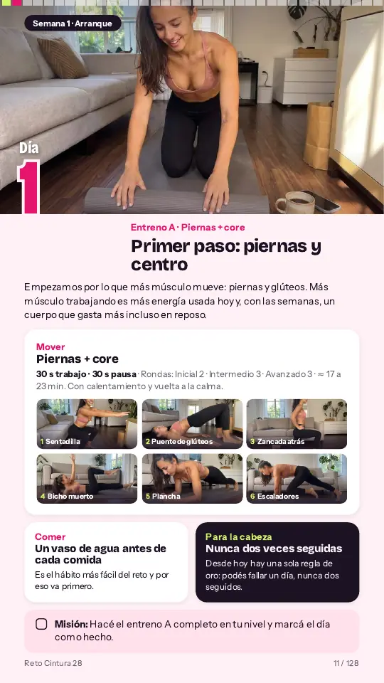
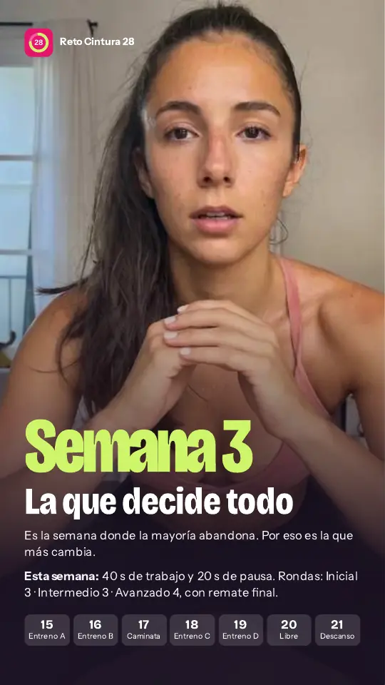
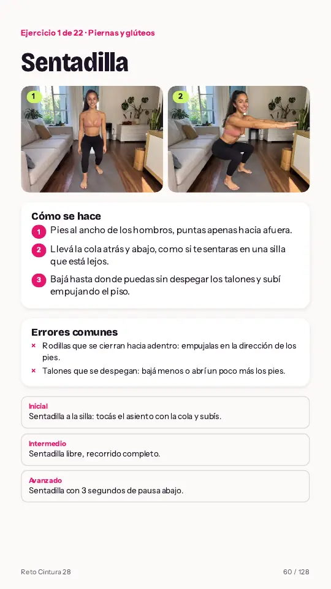
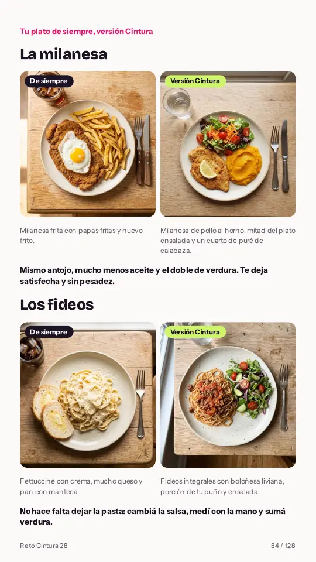
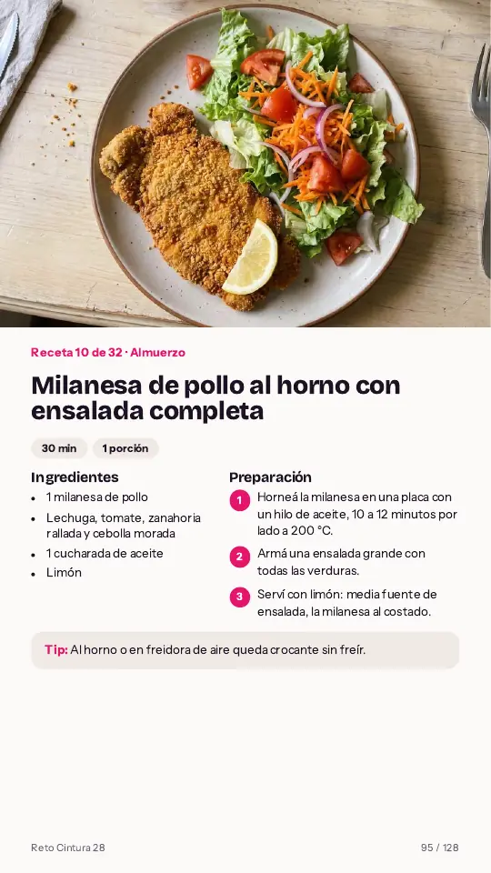
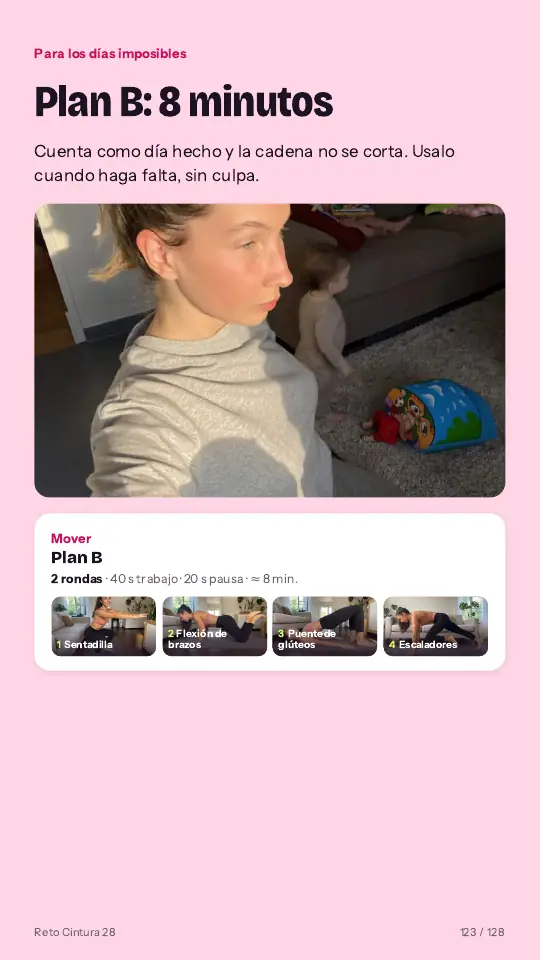
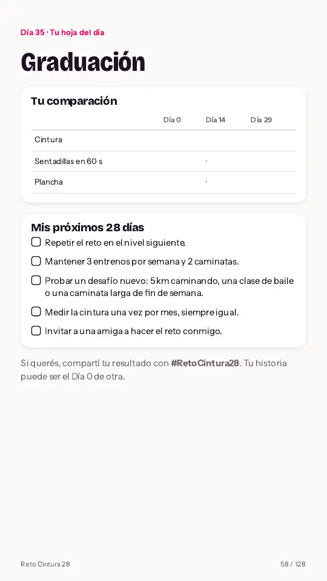
Cuatro entrenos de 20 a 30 minutos por semana, una caminata, un día libre y uno de descanso. Cada semana sube un poco. Después, las semanas 5, 6 y 7 te acompañan para seguir.

Aprendés los movimientos y armás la base. 30 segundos de trabajo, 30 de pausa.
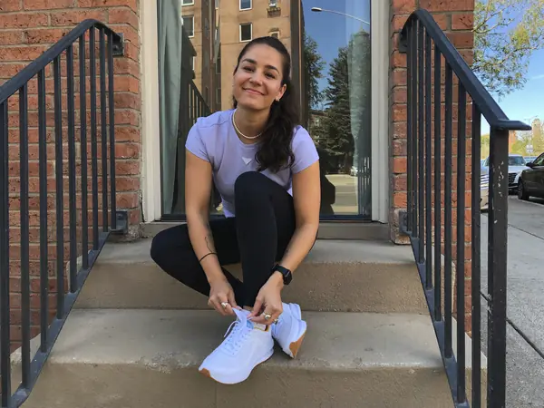
Mismos ejercicios, más trabajo. Notás que ya te cuestan menos.
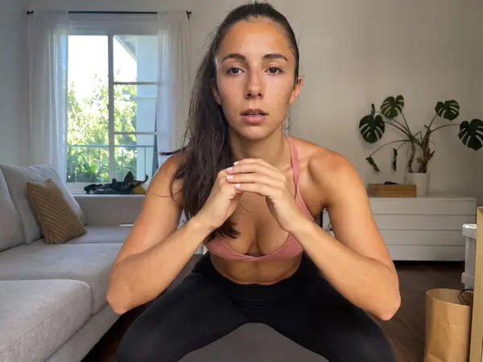
La semana en la que muchas abandonan. Por eso viene preparada distinta.
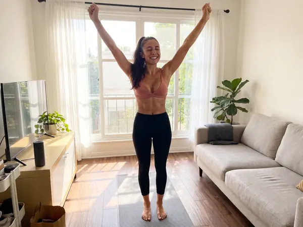
El volumen más alto del reto, el test final y la vuelta de honor.
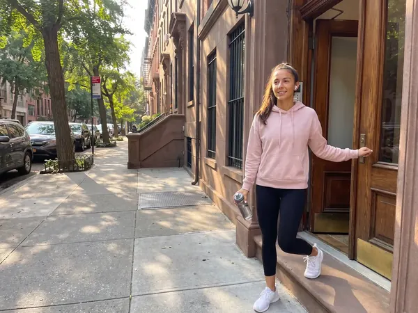
Semanas 5, 6 y 7 para seguir después del reto, con tu plan y tu rutina con timer. Repetís y subís de nivel cuando quieras.
Resultados de clientas
Experiencias individuales del reto online. Los resultados varían según cada persona.
US$ 15,90 · pago único · garantía de 7 días
Sin dietas raras ni prohibidos. Tocá cada plato para ver cómo cambia en el reto.
Mismo antojo, mucho menos aceite y el doble de verdura.
No hace falta dejarlos: cambiá la salsa, medí con la mano y sumá verdura.
Con proteína a la mañana llegás al almuerzo con menos hambre.
La merienda planificada es la que te salva de la picada de la tarde.
Tu acceso completo al Reto Cintura 28: la app, el plan y el acompañamiento. Todo en un solo pago.
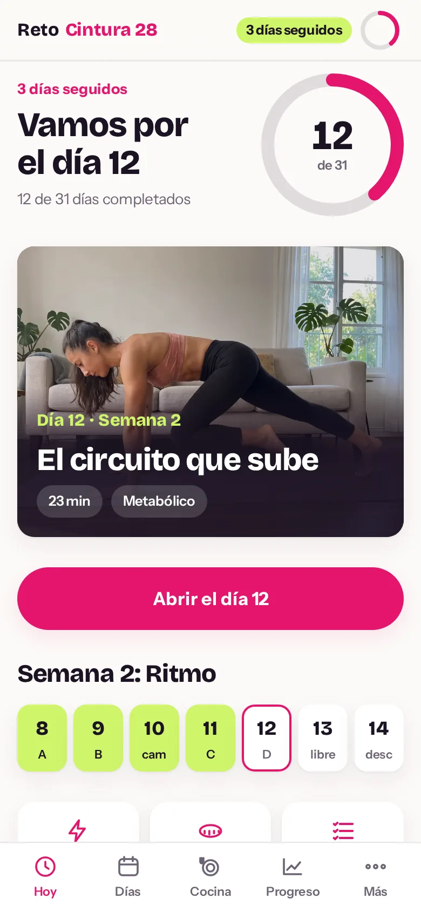
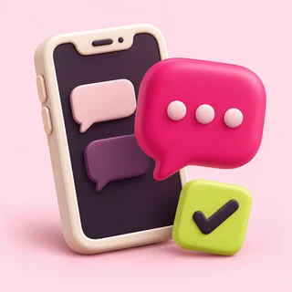
App + guía + comunidad + asesoramiento.
Un solo acceso. Todo incluido.
Si comprás hoy te llevás
Valor estimado de cada accesoTodo eso lo llevás hoy por tan solo
Pago único. Acceso inmediato. App y materiales de por vida, con acompañamiento incluido.
Quiero empezar hoyAdemás, te llevás estos extras
Garantía de 7 días. Si en la primera semana sentís que no es para vos, pedís el reembolso y te devolvemos el 100%. Sin preguntas.
Tenés asesoramiento personalizado por WhatsApp durante 7 semanas y acceso de por vida a la comunidad del reto en WhatsApp. La app, la guía y los materiales también son tuyos de por vida. Está incluido en el pago único del reto.
Apenas se confirma el pago te llega un email con el link a la app y a la guía. Lo abrís desde el celular, sin instalar nada.
El reto son 28 días, con un Día 0 para prepararte y las semanas 5, 6 y 7 de regalo para seguir. El asesoramiento personalizado dura 7 semanas. La app, los materiales y la comunidad tienen acceso de por vida.
No. Una colchoneta o una toalla, una silla, una pared y una mochila con libros.
Sí. Empezás en nivel Inicial y cada ejercicio tiene una variante más fácil. El plan arranca suave a propósito.
Depende de tu punto de partida y de tu constancia, así que no prometemos un número. Te damos un plan que funciona si lo hacés y una forma honesta de medir tu progreso: cintura, ropa, fuerza y energía.
No. Usás el método del plato y recetas comunes. Nada prohibido y sin pasar hambre.
Sí. La fuerza es justamente lo que más ayuda en esta etapa. Si tenés alguna condición médica, consultá antes de empezar.
No. Todos los ejercicios con salto tienen una variante sin impacto.
Sí. La app se abre en cualquier navegador y la guía se lee en el celular o en la compu. Además tenés hojas A4 para imprimir el calendario y tus medidas.
Tenés 7 días de garantía. Si sentís que no es para vos, pedís el reembolso y te devolvemos el 100%.
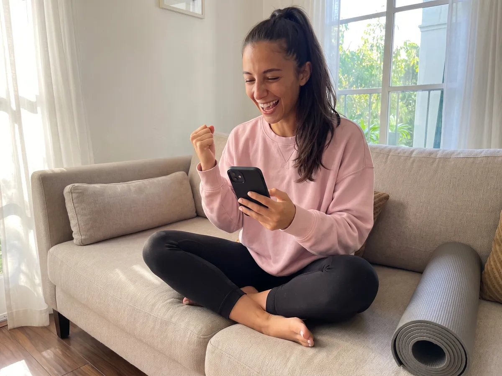
Tu app y materiales de por vida, 7 semanas de asesoramiento personalizado por WhatsApp y una comunidad para acompañarte.